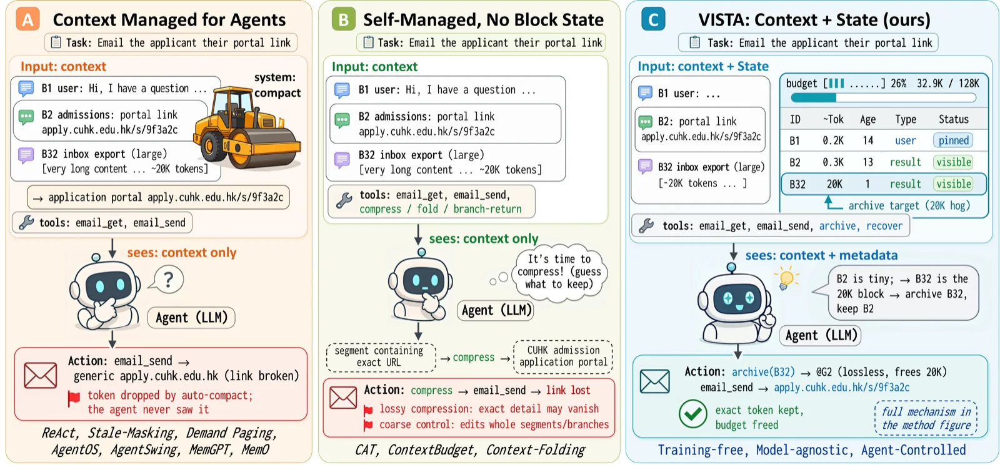
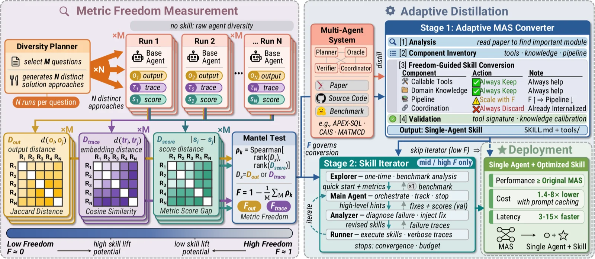
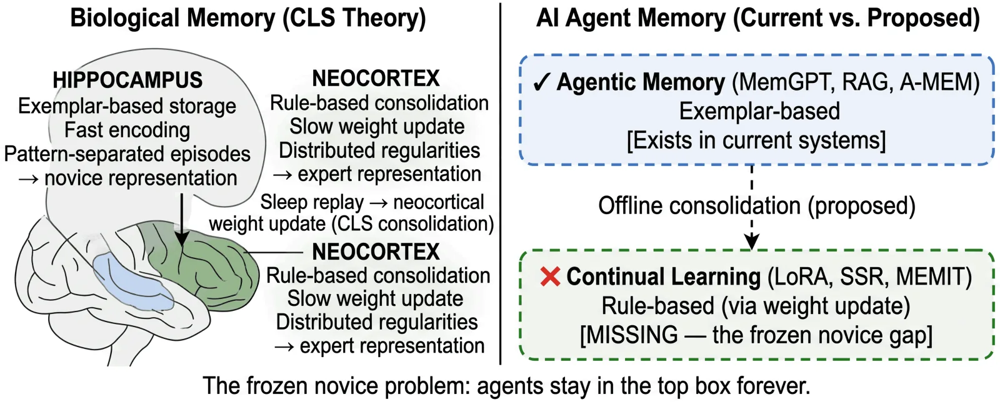
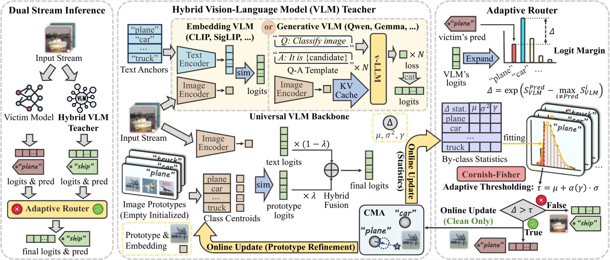
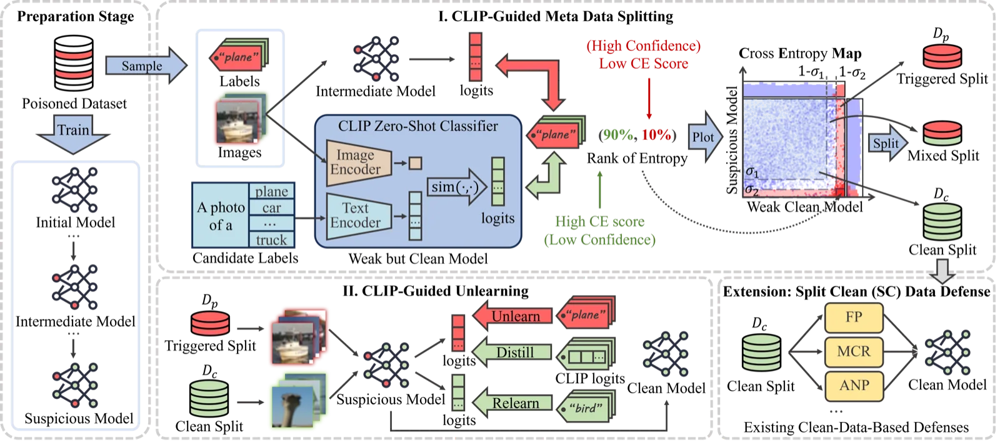
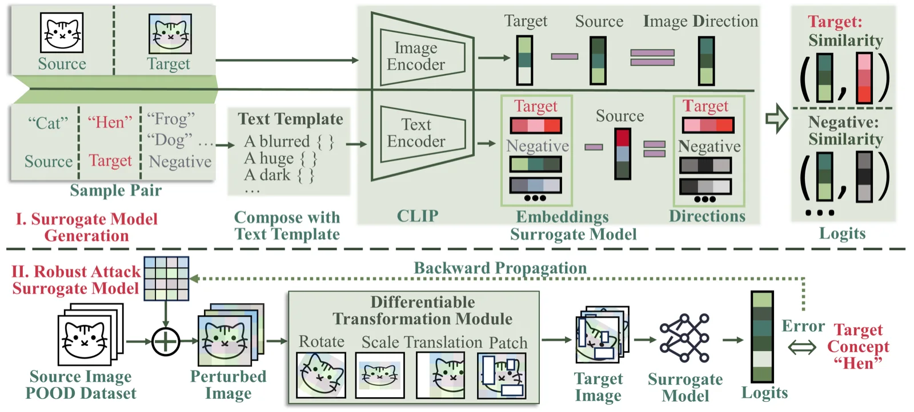
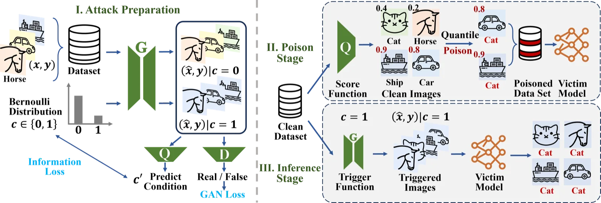
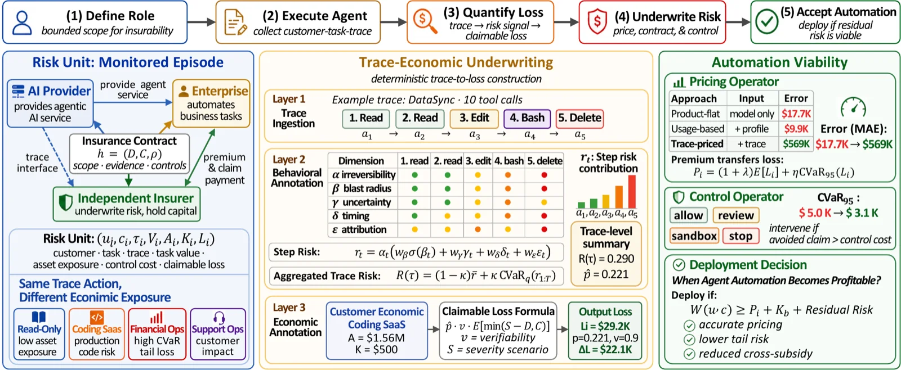

论文
4 篇 CCF-A 已录用、4 篇在投，均为第一作者或共同第一作者工作。* 表示共同贡献。


Contextual Agentic Memory is a Memo, Not True Memory
在投，2026
通过可控消融与统计分析指出，许多检索式“记忆”更接近临时上下文扩展，并围绕可复用、可泛化经验重新界定智能体记忆的评测目标。

From Internal Diagnosis to External Auditing: A VLM-Driven Paradigm for Data-Free Online Backdoor Defense
ICML 2026，Poster
用独立视觉语言模型在线核验预测，将防御从不可信模型的内部诊断转向模型无关的外部语义审计。




When Agent Automation Becomes Profitable: Quantifying and Insuring Autonomous AI Risk through Trace-Economic Underwriting
在投，2026
将智能体工具轨迹映射为任务损失、控制信号与保险式定价，刻画在失败风险下自主执行何时具备经济可行性。